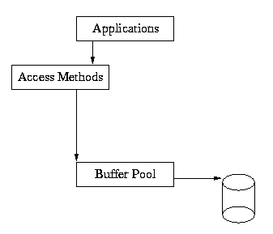
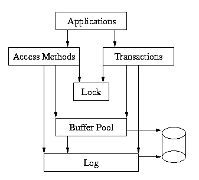

So far, we've discussed applications that used only the Access Methods for fast data storage and retrieval. Application code that uses Berkeley DB in this way might appear as follows:
switch (errno = dbp->put(dbp, NULL, &key, &data, 0)) {
case 0:
printf("db: %s: key stored.\n", (char *)key.data);
break;
default:
fprintf(stderr, "db: put: %s\n", strerror(errno));
exit (1);
}
The underlying Berkeley DB architecture that supports this is:

As you can see from this diagram, the application makes calls into the Access Methods, and the Access Methods use the underlying shared memory buffer cache to hold recently used file pages in main memory.
The previous chapters in this Guide have described applications that use only the Access Methods. The subsequent chapters will describe how to build more complex applications that include full database recoverability. However, writing recoverable applications requires a small amount of additional complexity in the application, and quite a bit of additional complexity in the Berkeley DB library.
The additional complexity in the application is that calls to the Access Methods must be wrapped in transaction begin and end calls, i.e., the application must inform Berkeley DB where to begin and end transactions, and must be prepared for the possibility that it may not be possible to make a specific change to the database at any particular time (e.g., that the transaction can abort).
A typical example of transaction protected code might appear as follows:
retry: if ((errno = txn_begin(txnp, NULL, &tid)) != 0) {
fprintf(stderr, "db: begin: %s\n", strerror(errno));
exit (1);
}
switch (errno = dbp->put(dbp, tid, &key, &data, 0)) {
case EAGAIN:
(void)txn_abort(tid);
goto retry;
case 0:
printf("db: %s: key stored.\n", (char *)key.data);
break;
default:
fprintf(stderr, "db: put: %s\n", strerror(errno));
exit (1);
}
if ((errno = txn_commit(tid)) != 0) {
fprintf(stderr, "db: commit: %s\n", strerror(errno));
exit (1);
}
In this example, the same operation is being done as before, however, it is wrapped in transaction calls. The transaction is started with txn_begin, and finished with txn_commit. If the operation fails due to a deadlock, then the transaction is aborted using txn_abort, and the operation is retried from the beginning.
There are five major subsystems in Berkeley DB: the Access Methods, the Memory Buffer Pool, Transactions, Locking and Logging.
Here is a complete picture of the Berkeley DB package:

The application makes calls to the Access Methods and to the Transaction subsystem. The Access Methods and Transaction subsystem make calls into the Buffer Pool, Locking and Logging regions on behalf of the application.
While each of the underlying subsystems (Lock, Log and Buffer Pool) can be called separately (e.g., the Buffer Pool subsystem can be used apart from the rest of Berkeley DB by applications simply wanting shared memory buffer pool functionality), most applications will either use the Access Methods only, or the Access Methods wrapped in calls to the Transaction interfaces if they need database recoverability in the face of application or system failure.